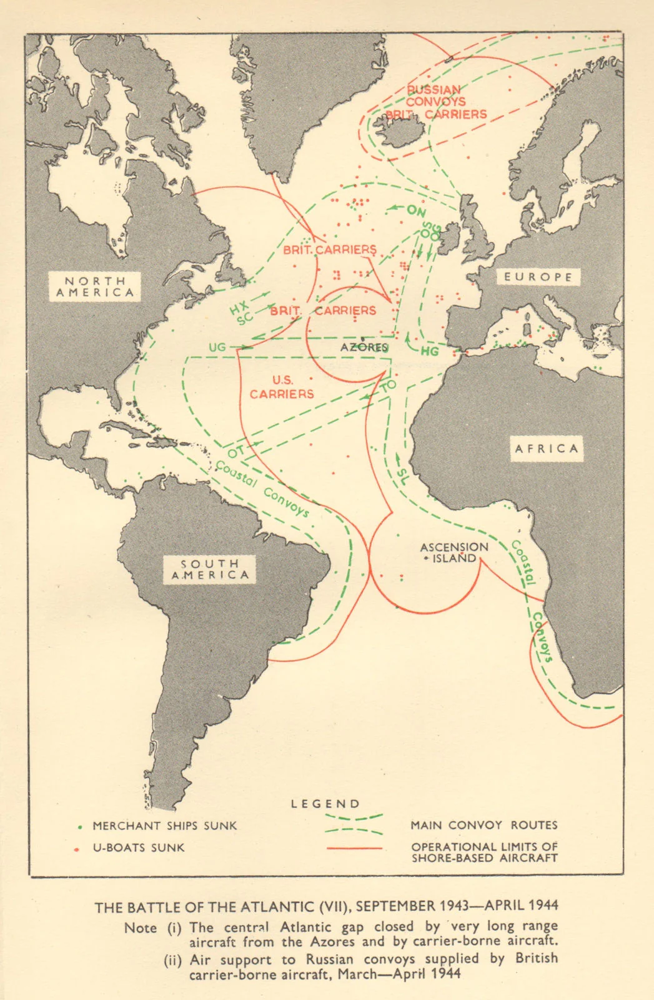
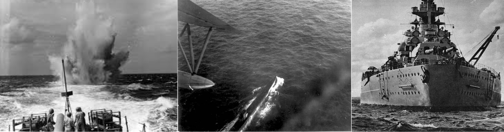
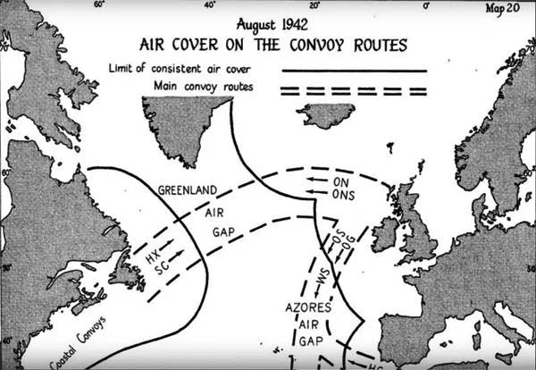
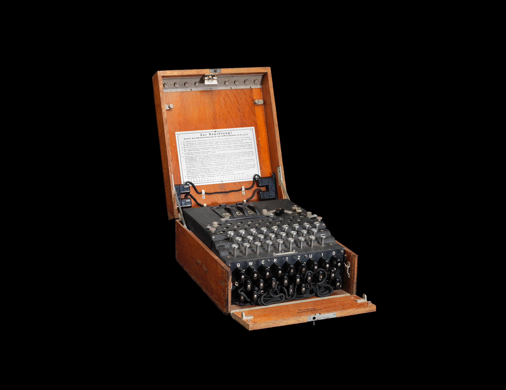
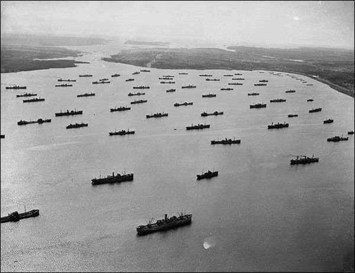
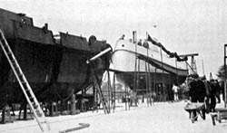
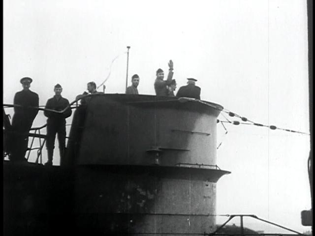

A Batalha do Atlântico foi a campanha naval mais longa e estratégica da Segunda Guerra Mundial. Iniciada em 3 de setembro de 1939, poucas horas após a Grã-Bretanha declarar guerra à Alemanha, e encerrada apenas em 8 de maio de 1945, no Dia da Vitória na Europa (VE Day), ela se estendeu por quase seis anos. Foi um conflito decisivo, pois garantiu o fluxo de suprimentos, tropas e armamentos entre a América do Norte e a Europa. Sem essa vitória, os Aliados dificilmente teriam sustentado a guerra contra a Alemanha nazista.
onde aconteceu?
O teatro de operações foi vasto, abrangendo:
O Oceano Atlântico em toda sua extensão.
O Rio da Prata.
O Mar do Norte e o Mar da Irlanda.
O Mar de Labrador e o Golfo de São Lourenço.
O Mar do Caribe e o Golfo do México.
Além do Oceano Ártico, vital para o envio de suprimentos à União Soviética.
Essa amplitude mostra que a batalha não foi restrita apenas ao Atlântico Norte, mas envolveu praticamente todas as rotas marítimas estratégicas que conectavam os Aliados.


Por que aconteceu?
A batalha surgiu da necessidade vital de manter ou interromper as linhas de suprimento. Para a Alemanha, o objetivo era sufocar a Grã-Bretanha, cortando o abastecimento de alimentos, combustível, armas e matérias-primas. Os submarinos alemães, os temidos U-boats, eram a principal arma nessa estratégia. Para os Aliados, garantir a chegada desses recursos era essencial para resistir ao cerco nazista, planejar contra-ofensivas e, mais tarde, preparar a invasão da Europa ocupada.O almirante alemão Karl Dönitz reconheceu que os Estados Unidos demorariam a organizar comboios e construir navios suficientes para defesa. Por isso, a Alemanha explorou esse período inicial de fragilidade para tentar vencer a guerra no mar.
Quais foram as dificuldades?
A Batalha do Atlântico foi marcada por inúmeros desafios, tanto tecnológicos quanto estratégicos:
A ameaça dos U-boats:
Os submarinos alemães atacavam em grupos, conhecidos como wolfpacks (“matilhas de lobos”), cercando comboios à noite e afundando vários navios em poucas horas. Isso levou Churchill a admitir que os U-boats eram “a única coisa que realmente o assustava” durante a guerra.
O vazio aéreo do Atlântico
Durante anos, havia uma zona no meio do oceano sem cobertura de patrulha aérea aliada, chamada de Mid-Atlantic Gap. Nesse espaço, os comboios ficavam indefesos até a chegada de aviões de longo alcance, como o B-24 Liberator, que fecharam a brecha.

Os códigos da Enigma
As mensagens dos submarinos eram criptografadas pela máquina Enigma, dificultando que os Aliados previssem ataques. Apenas após a quebra dos códigos em Bletchley Park, as marinhas conseguiram vantagem estratégica.

Logística dos comboios
Organizar comboios de centenas de navios mercantes exigia coordenação precisa de rotas, escoltas e comunicação. Qualquer falha podia significar perdas devastadoras.

Altas perdas e necessidade de produção acelerada
Em certos períodos, os U-boats afundavam mais navios do que os Aliados conseguiam construir. Isso levou os EUA a investir em produção em massa de cargueiros rápidos e baratos, como os Liberty Ships.

Avanços tecnológicos alemães
A Alemanha introduziu torpedos acústicos, dispositivos de respiração submarina (schnorchel) e revestimentos anti-sonar. Essas inovações complicaram ainda mais a luta no mar até que os Aliados desenvolvessem contramedidas eficazes.

Como o Brasil participou?
O Brasil entrou na guerra em 22 de agosto de 1942, após ataques a navios mercantes brasileiros por submarinos do Eixo.
Entre 1942 e 1943, a Marinha do Brasil escoltou 3.167 navios em 614 comboios, transportando cerca de 16,5 milhões de toneladas de carga com baixíssima taxa de perdas (0,1%). O Brasil também participou ativamente no combate: em julho de 1943, em operação conjunta com os EUA, ajudou a afundar o submarino alemão U-199 no litoral do Rio de Janeiro. Cerca de 1.600 brasileiros morreram em consequência da campanha, entre civis e militares.